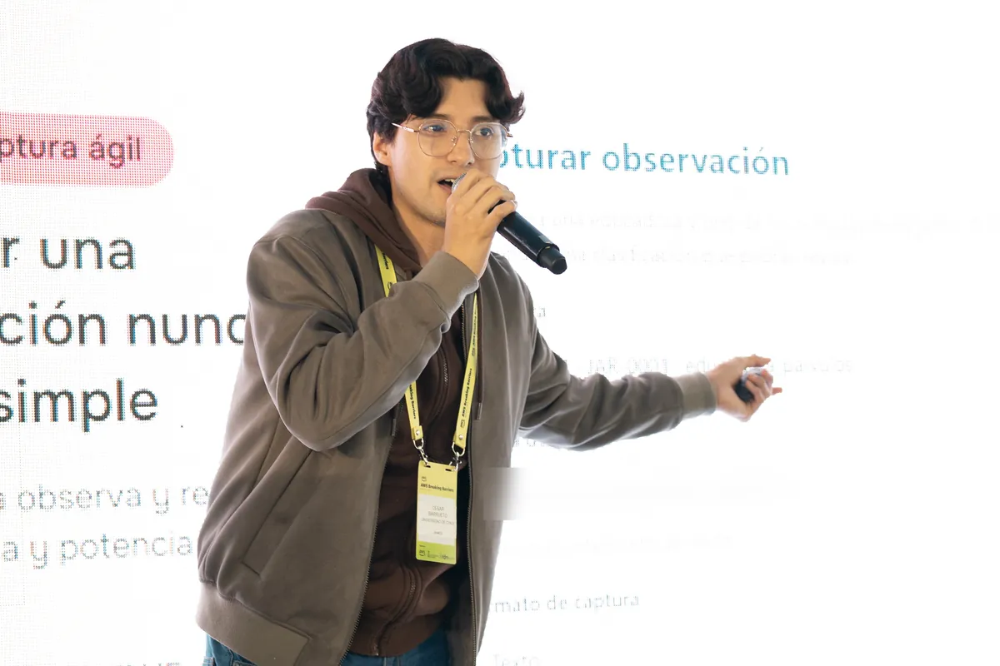
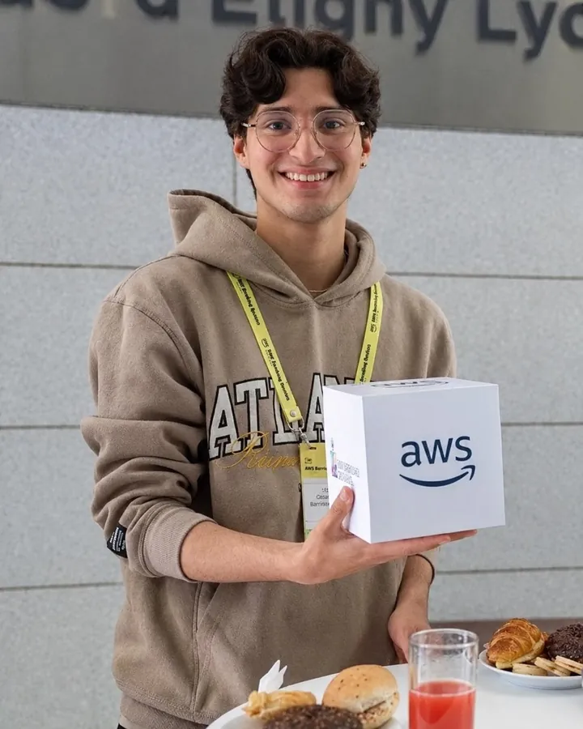

Ficha técnica — ingeniero de datos e IA · U. de Chile, 4.º año
César Barrueto
convierto horas de trabajo en minutos, con datos.
Diseño pipelines y llevo modelos de lenguaje a problemas reales en AWS y Azure. En Chilexpress, la investigación de mercado pasó de 2–4 horas a 10 minutos.
- Foco
- Data · LLMs
- Nube
- AWS · Azure
- Lenguajes
- Python · SQL
- Estado
- Busca práctica

10 min
antes 2–4 h · investigación de mercado, Chilexpress
−35 %
tiempo para alcanzar la meta de forecast · Chilexpress
Top 6
Hackathon AWS Breaking Barriers 2026 · Avista
Proyectos01
- 01
API Coach Ejecutivo Chilexpress S.A. · práctica 2026
2–4 h → 10 min · forecast en hasta 35 % menos tiempo
Python · FastAPI · AWS Bedrock · MongoDB · Docker
Código(se abre en una pestaña nueva) - 02
Avista Fundación Integra · hackathon AWS
4 h por semana → 0
Python · React · TypeScript · PostgreSQL · AWS
Repositorio del equipo(se abre en una pestaña nueva) - 03
PolyBeauchef mercados de predicción, Beauchef
precios automáticos · racha y ranking
Django · Python · MySQL · HTML
Código(se abre en una pestaña nueva) - 04
CloudArena chat comparativo multicloud
2 modelos en paralelo, lado a lado
Python · FastAPI · Azure OpenAI · AWS Bedrock · Redis · MongoDB · Docker
Código(se abre en una pestaña nueva) - 05
Segmentación ML U. de Chile · 2024
6 perfiles · ≈ 92 % de acierto
Python · pandas · scikit-learn · Google Colab
Código(se abre en una pestaña nueva)
Laboratorio02
Simulaciones con datos de ejemplo. Mueve los parámetros como en el sistema real y mira cómo cambia el resultado.
Las demos necesitan JavaScript activado.
Ejecutivos, clientes y datos ficticios. No se llama a ningún modelo.
Stack03
Sin muro de logos: cada herramienta cruzada con los proyectos donde la usé de verdad. pieza central del proyecto usada en el proyecto
| Herramienta | Coach | Avista | CloudArena | PolyBeauchef | Segmentación ML |
|---|---|---|---|---|---|
| Datos | |||||
| Python | usada en el proyecto | usada en el proyecto | usada en el proyecto | usada en el proyecto | usada en el proyecto |
| pandas | pieza central del proyecto | ||||
| PostgreSQL · MySQL | usada en el proyecto | usada en el proyecto | |||
| MongoDB | usada en el proyecto | usada en el proyecto | |||
| Redis | usada en el proyecto | ||||
| IA y ML | |||||
| AWS Bedrock | pieza central del proyecto | pieza central del proyecto | |||
| Azure OpenAI | pieza central del proyecto | ||||
| scikit-learn | pieza central del proyecto | ||||
| Backend y web | |||||
| FastAPI | pieza central del proyecto | usada en el proyecto | |||
| Django | pieza central del proyecto | ||||
| React · TypeScript | usada en el proyecto | ||||
| Nube y DevOps | |||||
| AWS | pieza central del proyecto | ||||
| Docker | usada en el proyecto | usada en el proyecto | |||
También uso Apache Spark · Power BI · Microsoft Azure · Copilot Studio · Claude Code · Kiro · Postman · GitHub Actions · Google Colab
Sobre mí04
Me gusta encontrar el proceso que a alguien le quita cuatro horas a la semana, y dejarlo en cero.
Soy César, estudiante de 4° año de Ingeniería Civil en Computación en la Universidad de Chile, con minor en Data Science.
Hoy busco mi segunda práctica profesional en automatización con IA o desarrollo de software, idealmente en minería, banca o empresas internacionales.
- Reconocimiento
- Estudiante destacado, U. de Chile · 2025–2026
- Comunidad
- CADCC++ · Género y Diversidad · Redes Beauchef
- Fuera del código
- Canto. Leo Amanecer en la cosecha.


Trayectoria05
Descargar CV (PDF)-
Ingeniero de Automatización, IA y Control de Procesos · Chilexpress
Diseñé e implementé APIs REST con FastAPI en AWS, integrando IA generativa para automatizar procesos críticos.
Ver demo del API Coach Ejecutivo -
AWS Breaking Barriers Hackathon · Avista
IA para que las educadoras de Fundación Integra registren observaciones sin carga administrativa: 4 h por semana → 0.
Ver demo de Avista -
Asistente de Docencia · Universidad de Chile
Lideré mentorías técnicas en arquitectura de software y calidad de código, con pruebas de QA.
-
Analista de datos con Machine Learning · Universidad de Chile
Construí pipelines end-to-end con Python y SQL, y modelos de K-Means y KNN para segmentar datos.
Ver demo de segmentación -
Ingeniería Civil en Computación · Universidad de Chile
Minor en Data Science (dic. 2026). Estudiante destacado 2025–2026.
06 · Contacto · Busca práctica
¿Qué proceso tarda horas en tu equipo?
En Chilexpress llevé la investigación de mercados de 2–4 horas a 10 minutos con IA generativa, y con Avista eliminamos las 4 horas semanales de registro de las educadoras. Escríbeme y vemos qué podemos automatizar.